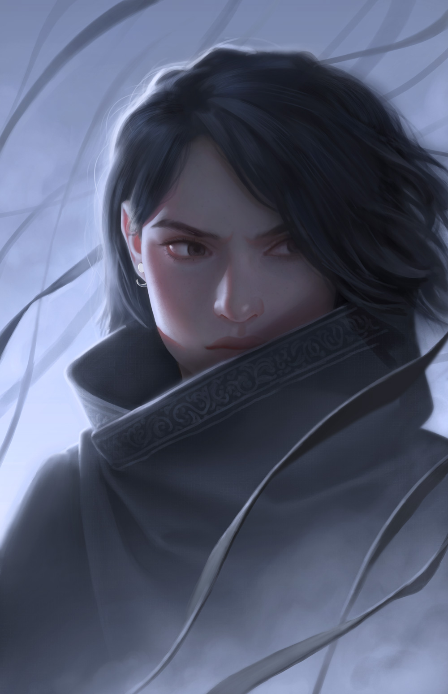

Protagonista · Nacida de la bruma
Vin
Una joven skaa que ha aprendido a sobrevivir en las calles de Luthadel. Cuando Kelsier la recluta, comienza a entender y entrenar las habilidades que hasta entonces llamaba su «suerte».
- Aspecto
- Menuda, de cabello oscuro y mirada atenta.
- Carácter
- Reservada, observadora y desconfiada al principio.
- Don
- Alomancia. Puede quemar varios metales y aprovechar sus distintos efectos.
- Objetos
- Capa de bruma, monedas y dagas de cristal.
- Vínculos
- Kelsier es su mentor. Sazed la ayuda a moverse entre la nobleza.